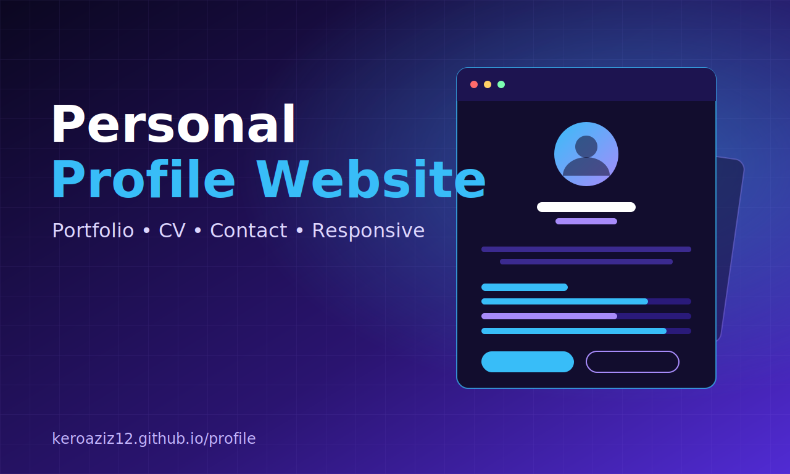
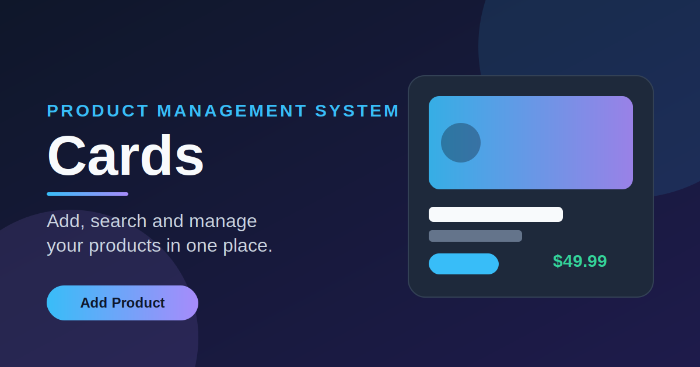
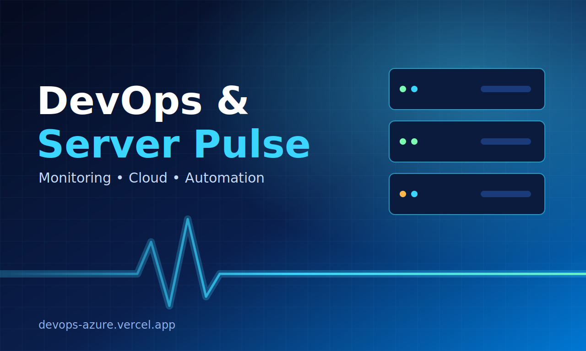
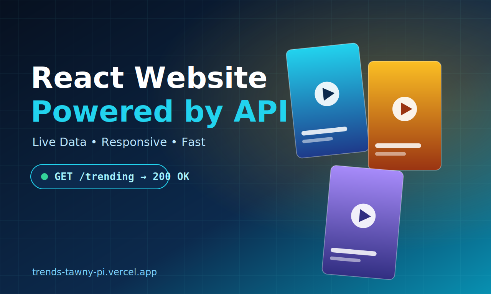

01
Backend
Application logic & APIs
FULL STACK .NET DEVELOPER
I'm Keroles Aziz Masry — an MIS student and developer who connects business thinking with thoughtful engineering. I build responsive interfaces and practical web applications with .NET and modern frontend tools.
Full Stack .NET Developer
 .
.Full Stack .NET Developer
Good software isn't just code. It's a useful answer to a real problem.
Studying Management Information Systems at Helwan University gives me a business-first perspective on the products I build. I enjoy turning requirements into clear interfaces, connecting them to reliable backend logic, and improving through hands-on practice.
Growing a practical toolkit across backend, frontend, data, and delivery.
Application logic & APIs
Interfaces that feel right
Responsive, consistent layouts
Organized, collaborative delivery
Explore the projects and demos below. Each one is a step toward building more useful, polished software.

↗A personal home on the web designed to introduce my background, technical focus, and work.

↗An organized interface concept for managing products, prices, images, and stock information.

↗A cloud analytics dashboard concept focused on presenting operational information in a clean interface.

↗A responsive movie and TV discovery experience that uses API data to display trending content dynamically.
↗ Project previews are custom visual representations. Open each project to see the actual website.
My foundation comes from university study, structured development programs, and turning what I learn into practical projects.
Explore my GitHub ↗Helwan University
Digital Egypt Pioneers Initiative (DEPI)
Information Technology Institute (ITI)
Shababuna Coding Initiative
HAVE AN OPPORTUNITY?
I'm open to internships, junior developer opportunities, collaborations, and interesting problems to solve.